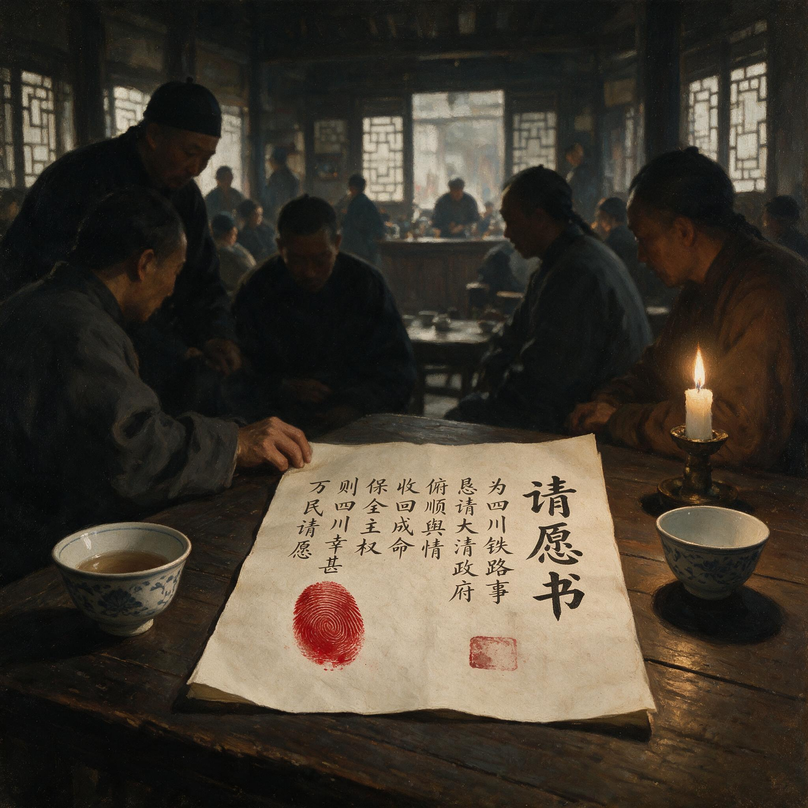

第 7 章
请愿书的血痕
宣统三年八月初五日午后，洪顺茶馆柜台前，街正刘洪顺手中捏着一张从督署门口撕下的告示——那是朝廷批复川路公司股东会呈文的电谕抄件。电谕里写道：“铁路国有政策已定，毋庸再议。川路公司应

血书请愿状与茶馆密议氛围
AI 生成插图，非史实影像。
即遵旨交路，倘再聚众要挟，定予严惩。”
这张纸的来历，与另一份长三尺、宽一尺二寸、以夹江竹纸书写且已发黄的请愿书不同；那请愿书上的字迹是用人血写成，氧化后呈暗褐色，笔画间有饱蘸与干涩的痕迹，纸右下角更按着四十余个深浅不一的指印。
红照壁街，这条位于成都城东南角、从头至尾不过三百步的短街上，二十来家铺子——三家绸缎庄、两家药材行、一家当铺，以及杂货铺和茶馆——在八月下旬全部下了门板，门板上贴着“奉旨罢市”的白纸帖，其下则有一张刘洪顺贴出的更大告示，召集本街十六岁以上者于此日午后议事。
五十二岁的刘洪顺，担任这基层职役已九年，平日召集街坊无非为分摊修渠银两或商量防火巡夜，但今日要议的事却不同。此刻，茶馆内挤站着七八十号人，桌椅皆挪至墙边。
刘洪顺念了一遍。茶馆里先是静，然后有人骂了一句。骂声一起，满屋子都炸开了。有人说朝廷不讲理，有人说盛宣怀该杀，有人说咱们四川人的钱就这么白没了。刘洪顺等声音稍落，才说：“股东会递了呈文，咨议局发了电报，王大人代奏了，都不管用。朝廷不听。”
他顿了顿，又说：“我听说，东大街那边有人写血书。”
血书两个字一出口，茶馆里又静了。写血书，在四川民间的传统里，是最后的申诉手段。一个人受了天大的冤屈，告状无门，才会咬破手指写血书，那是把自己的命押上去，求一个公道。一群人写血书，那就不只是个人的冤屈了——那是一街人、一城人在说：我们没有别的办法了。刘洪顺把那张告示翻过来，铺在柜台上。他从怀里掏出一根针。针是缝衣针，细而长，针尖在茶馆昏暗的光线里泛着一点冷光。他把针放在告示旁边，说：“红照壁街要不要写，大家说了算。”
没有人先说话。七八十号人挤在茶馆里，能听见街面上巡防军走过的脚步声。然后，一个声音从人群后面传来：“我签。”
说话的是个年轻人，二十出头，在街口摆摊修鞋。他挤到柜台前，把右手食指伸出来。刘洪顺拿起针，在他指尖扎了一下。年轻人皱了皱眉，血珠子冒出来，他用拇指把血抹匀了，按在那张告示的背面。一个指印。第二个上来的是绸缎庄的周掌柜。他五十六岁，在红照壁街住了三十年，铺子里雇着四个伙计。他没有伸手，而是说：“刘街正，光按指印不够。我们要写。”
刘洪顺看着他：“写什么？”
“写我们红照壁街一百三十七户人家的委屈。”周掌柜说，“写我们每年缴的租股银子，写朝廷怎么骗了我们。光按指印，上头看了还以为是有人逼我们按的。”
周掌柜的话得到了响应。但问题来了：谁来写？红照壁街能写字的人不多。刘洪顺自己只能记账，写不了文章。周掌柜能写，但他自认笔杆子不够硬。最后有人想起了街尾住着的陈先生。陈先生叫陈寿昌，是个老塾师，六十多岁，在红照壁街教了二十年私塾。罢市以后，学也停了，陈先生整天在家看书。刘洪顺派人去请。不多时，陈先生来了，穿着洗得发白的蓝布长衫，手里拿着一支毛笔。陈先生听明白了事由，沉默了一会儿。他看着柜台上那张按了血指印的告示背面，说：“写血书不是闹着玩的。这是要递到北京去的。措辞不能乱。”
他问刘洪顺要了一张干净纸。不是夹江竹纸，是更好一些的连史纸，白而厚实。陈先生把纸铺在柜台上，提起笔，但没有蘸墨。他看着围在四周的街坊们，说：“你们要写什么，先说给我听。”
于是七嘴八舌地说起来。有人说要写“川人冤枉”，有人说要写“朝廷失信”，有人说要写“盛宣怀误国”。周掌柜说得最清楚：“我们要写三件事。第一，铁路国有可以，但股本必须全数发还。第二，盛宣怀和邮传部欺上瞒下，必须惩办。第三，川汉铁路是四川人的血汗钱修的，朝廷不能一句话就收了去。”
陈先生听着，点了点头。他没有用墨。他放下毛笔，从袖子里摸出一根针——那是他平时用来补书的针，比刘洪顺的缝衣针粗一些。他把针在烛火上烧了一下，然后扎破了自己的左手中指。血流得慢。陈先生的手瘦而干枯，皮肤皱褶深如沟壑。他用力挤了几下，血才聚成一颗珠子。他把笔尖凑过去，血浸透了笔毫。茶馆里鸦雀无声。陈先生开始写字。第一行写的是：“具禀四川成都府成都县红照壁街阖街商户住户等。”
他写得很慢。血不如墨顺滑，笔尖在纸面上涩涩地走。写到一半，血干了，他不得不再挤一次。这一次挤出来的血更少，掺着透明的组织液，颜色淡了些。陈先生不管这些，继续写。“为铁路国有祸川殃民事。”
他写得很慢。血不如墨顺滑，笔尖在纸面上涩涩地走。写到一半，血干了，他不得不再挤一次。这一次挤出来的血更少，掺着透明的组织液，颜色淡了些。陈先生不管这些，继续写。“窃自铁路国有之命下，川人如遭雷击。”他写道，“川汉铁路经始于光绪二十九年，川人节衣缩食，集股兴工。租股一项，按粮摊派，中等之户岁纳银三钱至五钱不等。小民终岁勤动，所得几何？而踊跃输将者，非有他也，冀铁路之成，利归桑梓耳。”
这一段说的是租股机制。陈先生自己就是租股的缴纳者。他名下有三亩薄田，每年缴租股银九钱。对于一个年收入不过三四十两的塾师来说，这不是一笔小数目。但他从来没有拖欠过，因为他也相信铁路修成了对四川有好处。“今朝廷以一纸之诏，收归国有。”陈先生继续写，“而所许发还之款，仅六成现银，四成股票。股票之利，茫不可期；现银之数，远不敷本。是川人数十年之脂膏，一旦化为乌有。”
写到“化为乌有”四个字时，陈先生的手微微发抖。茶馆里有人开始擦眼泪。周掌柜在旁边看着，忽然说：“陈先生，后面要加上：朝廷此举，失信于民。”
陈先生抬头看了他一眼。老塾师犹豫了一下。“失信于民”这四个字太重了。君民之间，本无契约可言——至少朝廷是这么认为的。但周掌柜不管这些。他说：“怎么不是失信？当初号召我们入股的时候，朝廷说的是‘官商合办’‘利益均沾’。现在一句话就收走了，这不是失信是什么？”
陈先生沉默了片刻，终于落笔：“朝廷以信治天下。今出尔反尔，何以示民？”
这句话比“失信于民”更重。它不是在请求，而是在质问。接下来一个时辰里，陈先生断断续续地写着。他前后刺破了三根手指——左手的中指、食指和无名指——因为一根手指的血不够写完这封请愿书。到后来，血流得越来越慢，他不得不把针扎得更深一些。围在四周的街坊们看着他的手指渐渐肿胀起来，指尖变成了青紫色。请愿书的正文一共写了四百余字。在结尾处，陈先生写道：“为此联名具禀，泣血上陈。伏乞督宪大人鉴核，代奏天听，收回成命，以安人心而固邦本。”
这是传统的请愿书格式。“泣血上陈”四个字在公文套话里并不罕见，但这一次不是套话——纸上的字真的是用血写的。
陈先生写完最后一个字，把笔搁下。他的左手已经麻木了。刘洪顺从柜台上拿起那张请愿书，举起来让所有人看。纸上密密麻麻的暗红色字迹在烛光下泛着幽暗的光泽。
“还有没有人要按指印？”刘洪顺问。于是人们排着队上前。周掌柜第一个按，他把右手食指咬破——他不愿意用针——重重地按在自己的名字下面。然后是绸缎庄的伙计、药材行的掌柜、当铺的朝奉、杂货铺的老板娘、修鞋的年轻人、挑水的苦力、洗衣的妇人。每人都按一个指印。有的人不会写字，由陈先生代签姓名，然后在名字下面按指印。四十三个指印。
三天之内，红照壁街这份血书在成都城里传开了。传播的方式不是靠报纸——成都的几家报馆在罢市后都被巡警道盯紧了，不敢刊登这类消息——而是靠刻字匠。成都城里有二十多家刻字铺，集中在学道街和青石桥一带。
这些刻字铺平时承接的是印名片、印账簿、印婚丧帖子的活计，规模都不大，一般是一个师傅带一两个徒弟，铺面不过丈余见方。
但罢市以后，这些刻字铺找到了新的营生：印制请愿书模板。最先做这个的是学道街口的文华斋刻字铺。铺主姓吴，叫吴文华，四十来岁，会刻木版，也会石印。
八月初六，红照壁街的血书传到学道街，有人拿了一份抄件给吴文华看。吴文华看完后，没有多说话，当天晚上就刻了一块木版。
这块木版刻的不是红照壁街请愿书的全文，而是一个模板：抬头空着，留给各街自己填；正文部分是一段通用的申诉文字，大意是“川汉铁路系川人集股自办，今朝廷强收国有，股本无着，民心惶惶，恳请督宪代奏收回成命”；落款处也空着，留给各街住户签名按印。
吴文华刻好版子，连夜印了两百份。第二天一早，他把这些模板送到东大街、总府街、打金街、盐市口各处的茶馆里，不收钱。这是成都印刷史上一个奇特的时刻：罢市期间，几乎所有商业印刷都停了，但政治印刷却以一种半公开的方式繁荣起来。
刻字匠们印制的不只是请愿书模板，还有四川保路同志会的宣言、各地股东会的决议、以及大量讽刺邮传部和盛宣怀的竹枝词。有一首竹枝词是这样写的：“铁路拿来送外人，盛宣怀是卖国臣；川人血汗成流水，只换洋人一笑颦。”这首词没有署名，但被刻成传单，在成都各街巷散发。
巡警道派人收缴，但收不尽——刻字匠们把版子藏起来，风声一过又拿出来印。
吴文华的模板被各街采用了。接下来一周里，成都城有四十七条街道和会馆仿效红照壁街，写了血书请愿状。每一条街的做法大致相同：街正召集本街住户，在茶馆或庙宇里议事；议决要写血书后，推举一位能写字的人执笔——通常是塾师、账房先生或者退职的小吏；执笔人当众刺血书写，街坊们依次签名按指印；最后，请愿书由街正亲自送到督署辕门外的收文处。
但各街的请愿书措辞并不完全一致。最早的几份——红照壁街、东大街、总府街——用的还是传统请愿书的语气，“泣血跪求”“伏乞恩准”之类的字样反复出现。但到了八月下旬，措辞开始变化。
变化最明显的是打金街的请愿书。打金街是成都金银首饰匠人的聚集地，街上开着三十多家金银铺，工匠加上学徒有二百多人。打金街的街正姓唐，叫唐永发，自己就是个老金匠。八月十一日，唐永发召集本街住户在街口的关帝庙里议事，决定写血书。执笔人是打金街一家首饰店的账房先生，姓冯，叫冯子安，读过十年书，能写一手好字。冯子安当众刺破手指，开始书写。但他写到一半时，被唐永发叫停了。“冯先生，”唐永发指着纸上的一行字说，“‘泣血跪求’这四个字，换掉。”
冯子安愣了一下：“换什么？”
“换‘据理力争’。”唐永发说，“我们不是在求谁。我们是在争我们自己的东西。”
冯子安犹豫了。“据理力争”这四个字在公文传统里不是没有，但通常用于平等的双方之间的交涉，而不是百姓对官府的呈文。用这四个字，意味着写状人不认为自己是在“跪求”——他认为自己有理，官府也得讲理。唐永发坚持要改。他说：“我们每年缴租股银子，是朝廷定的章程。现在朝廷自己反悔了，理屈的是朝廷，不是我们。”
冯子安最终改了。打金街的血书请愿状里没有出现“跪求”二字，取而代之的是“据理力争”“誓不甘休”这样的措辞。这份请愿书送到督署后，督署幕僚房里有人注意到了这个变化。一个姓郑的幕僚把打金街的请愿书和红照壁街的并排放在桌上，指着措辞的不同处给同僚看：“你看这里——‘跪求’变成了‘力争’。这不是笔误，是有意改的。”
同僚凑过来看了看，说：“这有什么？措辞不同而已。”
郑幕僚摇了摇头：“不一样。‘跪求’是求情，‘力争’是争理。求情的人不会造反，争理的人会。”
这个观察是准确的，但当时没有引起足够的重视。到八月下旬，措辞的变化进一步升级。陕西街的一份请愿书中出现了“川人自保”四个字。陕西街是成都的一条老街，住着不少从陕西迁来的商人后裔，以经营药材和皮货为主业。这份请愿书的执笔人是一个叫罗文清的私塾先生，他在请愿书的结尾处写道：“若朝廷不恤民瘼，一意孤行，则川人惟有自保而已。”
“自保”这个词在当时的语境里有着特殊的含义。它既不是“造反”，也不是“独立”，而是一种介于合法与非法之间的模糊状态——意味着如果朝廷不能保护川人的利益，川人将自己保护自己。这是一种含蓄的威胁，也是一种政治底线的试探。
陕西街的这份请愿书没有直接送到督署，而是先在各街传阅了一圈。有人在“自保”两个字下面用墨笔画了一道杠，表示赞同；也有人觉得这话说得太重了，劝罗文清删掉。罗文清没有删。
从“泣血跪求”到“据理力争”再到“川人自保”，措辞的递进只用了不到十天时间。这不是某个人或某个组织统一部署的结果——四川保路同志会的领袖蒲殿俊、罗纶等人此时仍然主张“文明争路”，反对将运动引向激进——而是成都市民阶层在书写血书的过程中自发完成的激进化。每一份血书的书写过程，都是一次小规模的政治集会。在茶馆或庙宇里，几十上百号人挤在一起，听着执笔人念出每一句话，然后议论、修改、补充。
这个过程本身就是一种政治训练：一个杂货铺掌柜可能从来没有想过“君民关系”这样的问题，但当他看着自己的血按在纸上、听着“失信于民”这样的词句被念出来时，他对朝廷的看法就不可逆转地改变了。
血书之所以具有这种激进化功能，是因为它不同于普通的请愿书。普通请愿书用的是墨，墨是身外之物；血书用的是血，血是身体的一部分。当一个人刺破自己的手指、把血挤到纸上时，他付出的不只是时间或金钱——他付出的是自己的身体。这种身体性的投入产生了一种强烈的道德感：我已经把血押上去了，我没有退路了。
这就是为什么各街在书写血书时坚持要当众刺血、当众书写、当众按印。这不是私下里签一份文件那么简单，而是一种公开的身体政治仪式。每一根被刺破的手指、每一滴落在纸上的血、每一个按下去的指印，都在向在场的人传递同一个信息：我们是一体的，我们已经走到了这一步。
这种仪式感在八月十五日中秋节那天达到了顶峰。中秋节在四川民间是一个重要的节日，讲究阖家团圆、赏月吃饼。
但宣统三年的中秋节，成都城没有过节的气氛。罢市仍在持续，店铺的门板没有卸下来，街头冷冷清清。四川保路同志会发出通告，要求市民不要举行任何庆祝活动，“以志哀痛”。
但成都市民自发地找到了一种度过中秋的方式：写血书。那一天，至少有十一条街道同时举行了血书书写仪式。
东御街的仪式在城隍庙里进行，二百多人参加；西御街的在清真寺里举行，因为那条街上住着不少回民；北打金街的在一家关了门的当铺里举行，因为当铺的铺面够大。
每一场仪式都遵循着大致相同的程序：街正宣布开始；执笔人刺血；众人静默；书写；念诵全文；签名按印；最后，所有人对着请愿书行三鞠躬礼。
行礼这个环节是中秋节那天才加入的。谁最先提议的已经无法考证，但它迅速被各街采纳了。三鞠躬礼在当时的民间礼仪中通常用于祭祀祖先或拜神——对着请愿书行礼，意味着这份文件被赋予了一种超越世俗权威的神圣性。
东御街的仪式结束后，有人把请愿书举过头顶，走出城隍庙，沿着街道走了一圈。
二百多人跟在后面，没有人喊口号，没有人挥拳头，只是沉默地走。巡防军的岗哨看着这支沉默的队伍经过，没有上前阻拦——因为他们不知道该怎么拦。这些人没有犯任何一条法律：他们没有聚众闹事，没有阻塞交通，没有攻击官府。他们只是在走路，手里举着一张纸。但每一个看到这一幕的人都明白：这是一种示威。不是用声音和拳头的示威，而是用沉默和血的示威。
这些血书最终都要送到督署去。送递的方式有两种。一种是街正亲自送到督署辕门外的收文处；
另一种是通过驿递系统送往北京。驿递是清代官方文件传递的主要方式，由驿站接力传送，速度大约是一天三百里。从成都到北京的驿路全长约四千八百里，正常需要十六天到二十天才能到达。
但驿递系统有一个规定：只传递官方文书，不传递民间呈文。这意味着成都市民的血书请愿状要想通过驿递送到北京，必须先由四川总督衙门加盖关防、作为官方文书转发。否则，这些血书连成都城都出不去。赵尔丰的幕僚们很清楚这一点。
八月下旬，督署收文处已经堆积了四十多份来自各街的血书请愿状。幕僚房的人把这些请愿状分类、编号、归档，然后拟了一份呈文给赵尔丰，请示如何处理。赵尔丰看了呈文，没有立即批复。他问幕僚：“这些血书，有多少份？”
“四十七份。”幕僚回答，“还在增加。”
“措辞如何？”
幕僚犹豫了一下：“最早几份还算恭顺，后来的……”他顿了顿，“措辞越来越硬了。”
赵尔丰让人把几份有代表性的请愿状送到签押房来。他一份一份地看过去：红照壁街的“泣血跪求”，打金街的“据理力争”，陕西街的“川人自保”。看完后，他把请愿状放在案头，没有说话。幕僚试探着问：“大帅，要不要把这些血书转发北京？”
赵尔丰摇了摇头：“转发？转发过去就是给盛宣怀递刀子。”他站起身，在签押房里踱了几步。“盛杏荪正愁没有证据说川人‘聚众要挟’。这些血书送上去，正好坐实了他的话。”
“可是不转发，”幕僚说，“民间的怨气只会更大。”
赵尔丰停下脚步，看着窗外。窗外是督署的后花园，花木扶疏，但远处能隐约听到街上传来的嘈杂声——不是闹事的声音，而是茶馆里议事的声音。罢市期间，成都城的公共生活并没有停止，反而更加密集了：人们不再去店铺和学堂，但茶馆和庙宇里的人比平时更多了。“北京那边怎么说？”赵尔丰问。幕僚从袖子里抽出一张电报纸条。纸条很薄，上面只有一行字：“奉旨：川路事着赵尔丰严拿首要，解散胁从，毋任滋蔓。钦此。”
这份电报是八月中旬发来的，已经在赵尔丰的案头压了好几天了。“严拿首要”四个字的意思很清楚：抓人。“解散胁从”的意思也很清楚：驱散罢市的人群。“毋任滋蔓”的意思是：不要让事态扩大。
但赵尔丰一直没有执行这份电令。原因很简单：他不知道抓谁。“首要”是谁？蒲殿俊、罗纶这些保路同志会的领袖？但他们并没有组织罢市——罢市是各街自发搞起来的。“胁从”是谁？成都城里十几万罢市的市民？抓得过来吗？
更重要的是，赵尔丰清楚一件事：一旦抓人，成都立刻就会出事。他在西南边防上待过多年，镇压过边地的民变，深知这种大规模社会运动的逻辑：在没有组织核心的情况下，民众的愤怒是分散的、无序的；但一旦官府动手抓人，就等于给愤怒提供了一个聚焦点——被抓的人会成为符号，而符号会动员更多的人。
更让赵尔丰头疼的是血书本身的性质。普通的请愿书可以用“聚众要挟”来解释——一群刁民受人煽惑、无理取闹——这是朝廷标准的话术。但血书不同。
血书是一种极端的身体表达，它传递的信息不是“我有理”，而是“我没有别的办法了”。当几十条街道的市民集体刺血书写时，任何试图用“煽惑”来解释的说法都显得苍白无力。谁煽惑他们刺自己的手指？谁煽惑他们用自己的血写字？这种行为的动力只能来自内部——来自一种对朝廷的彻底绝望。赵尔丰的幕僚们意识到了这一点。八月二十日晚上，几个幕僚在签押房外的一间小屋里私下议论。其中一个姓孙的老幕僚说：“我在督署当了二十年差，见过闹事的、请愿的、递状子的，从来没见过这样的。”
另一个幕僚问：“哪样的？”
孙幕僚指了指桌上堆着的血书：“这些。这些人不是来求情的——求情的人不会用血写字。他们是在告诉朝廷：我们已经到了这一步了，你看着办吧。”
屋里沉默了一会儿。然后有人说：“北京那边还催着抓人。”
孙幕僚苦笑了一声：“抓人？抓了人这些血书就没了？只会更多。”
他的判断是对的。八月下旬到九月初，成都城的血书运动仍在扩大。最初参与的主要是商户和手工业者——这些人是租股的主要承担者，对铁路国有化感受最直接——但逐渐地，其他群体也开始加入。
九月三日，成都府学的一批生员联名写了一份血书请愿状。生员就是秀才，在传统社会里享有一定的特权：可以见官不跪、不受刑讯、有资格参加乡试。生员参与政治运动历来是被严厉禁止的——朝廷认为读书人应该专心举业，不得干预地方事务——但成都府学的生员们顾不得这些了。
这份生员血书的执笔人是一个叫杨维的廪生，二十多岁，文笔很好。他用典雅的骈文写道：“川汉铁路者，川人之命脉也。”然后历数朝廷失信的过程、盛宣怀误国的罪状、以及川人遭受的经济损失。结尾处写道：“生等读圣贤书，所学何事？见义不为，是无勇也。”
“见义不为是无勇也”出自《论语》，原文是“见义不为，无勇也”。杨维把这句话用在血书的结尾处，等于是在说：如果我们读书人看到这种不公平的事还不站出来说话，那圣贤书就白读了。
这份生员血书在成都城里引起了很大的震动。生员不同于普通市民——他们是候补官员，是体制内的人。连他们都开始写血书了，说明体制本身正在从内部瓦解。
九月五日，更令人意外的事情发生了：成都巡防军的一部分下级军官和士兵也开始暗中同情保路运动。这不是公开的行为——公开支持保路运动的军人会被以“通匪”论处——而是一种私下的态度转变。有几个巡防军的哨官在茶馆里对熟人说过类似的话：“上头让我们弹压，可弹压谁？弹压那些写血书的百姓？他们的委屈我们也有。”
巡防军的士兵大多来自四川本地农村，他们的家庭也是租股的缴纳者。铁路国有化损害的不只是成都城里的商户和士绅，也包括广大农村的中小农户——那些每年缴纳三钱五钱租股银子的普通农民。这种情绪的蔓延让赵尔丰感到了真正的压力。九月七日晚上，赵尔丰在签押房里召见了几个心腹幕僚，讨论局势。桌上摆着两摞东西：一摞是各街送来的血书请愿状，已经有六十多份了；另一摞是北京发来的电报底稿，内容都一样——“严拿首要”。赵尔丰指着这两摞东西问幕僚：“你们说怎么办？”
没有人回答。赵尔丰又说：“北京以为我这里是一群乱党在闹事，抓了头头就散了。”他拿起一份血书，抖了抖，“你们看看这个——这是乱党能搞出来的吗？这是民心。”
“民心”两个字从他的嘴里说出来时带着一种罕见的沉重。赵尔丰不是不知道民心的分量——他在川边待了多年，深知边疆民族地区的治理靠的不是武力而是人心——但他也知道，“民心”一旦转向政治诉求，就不可能再用行政手段来安抚了。幕僚孙先生终于开口了：“大帅，现在的问题是时间。”
赵尔丰看着他：“什么意思？”
“这些血书如果继续堆下去，”孙幕僚说，“迟早会有人把消息传到北京以外的报馆去——上海的《申报》、天津的《大公报》。到那时候，就算朝廷想压也压不住了。”
这是赵尔丰最担心的事情之一。信息控制是清政府应对危机的主要手段之一——只要消息传不出去，就可以用“地方性事件”来解释一切——但电报时代的信息控制已经越来越难了。虽然官方电报线路被官府控制着，但民间有各种迂回的渠道：商人之间的信函、旅行者的口耳相传、外国传教士的报告。实际上，成都的血书运动已经引起了在川外国人的注意。成都平安桥天主堂的法籍主教杜昂在九月五日写给巴黎外方传教会总会的报告中提到了罢市和血书的事情：“这里的居民用一种非常特殊的方式表达他们的诉求——他们用自己手指的血来书写请愿书。这意味着他们已经完全不相信官府的承诺了。”
这份报告后来被收录在法国外交部的档案中，成为研究保路运动的珍贵史料之一。但赵尔丰当时不知道这些细节。他只知道一件事：时间不在他这一边。
九月九日清晨，赵尔丰做出了一个决定：他要把这些血书送一部分到北京去。不是通过驿递——那太慢了——而是通过电报摘要的方式。
他让幕僚从六十多份血书中选出十份最有代表性的，将其内容压缩成几百字的电报稿，发往邮传部和军机处。在这份电报中，赵尔丰没有用“乱党”“匪徒”之类的字眼来描述写血书的人。他用了“阖街商户住户”“阖学生员”“阖街工匠”这样的词汇——这是血书上原本的署名方式——等于是在告诉北京：这不是一小撮人在闹事，而是成都城各阶层的集体行动。
电报发出后，赵尔丰在签押房里等了三天。三天后，北京的回电来了。回电只有一行字：“奉旨：赵尔丰电悉。仍着该督严拿首要，解散胁从。钦此。”
还是那四个字：严拿首要。赵尔丰把电报纸条放在桌上，和那一摞血书放在一起。一边是六十多份用血写成的请愿状，每一份都承载着几十上百人的绝望和愤怒；另一边是一张薄薄的纸条，上面印着冰冷的电文。这两样东西并排放在一起的画面，就是宣统三年九月初成都困局最精确的缩影：民间已经把所有能用的表达方式都用尽了——从呈文到电报、从罢市到血书——但朝廷的回答始终只有一个：抓人。
赵尔丰坐在签押房里，看着这两摞东西，很久没有说话。幕僚们站在一旁，也沉默着。他们知道赵尔丰在想什么：如果执行北京的命令抓人，成都立刻就会乱；如果不执行命令继续拖着，北京就会认为他办事不力、甚至可能撤换他。无论选哪一条路，结果都不会好。窗外传来一阵隐约的嘈杂声——那是又一条街道在举行血书书写仪式了。声音不大，但持续不断，像远处河水的流淌声一样绵延不绝。督署签押房里的空气沉重得像凝固了一样。
桌上的血书散发着一股淡淡的铁锈味——那是人血氧化后的气味——和电报纸条的油墨味混在一起，形成了一种奇特的组合：一边是身体的热度已经冷却但仍在诉说的痕迹，一边是机器的冰冷效率所传达的权力意志。赵尔丰的手悬在这两摞东西之间。他没有动。